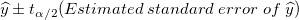

で
で  と異なっているかどうか、どのように知ることができるでしょうか? このような時には、信頼区間を使うことができます。有意水準 α を指定すると、に対する信頼区間を次の式で計算することができます。
と異なっているかどうか、どのように知ることができるでしょうか? このような時には、信頼区間を使うことができます。有意水準 α を指定すると、に対する信頼区間を次の式で計算することができます。フィット曲線とその信頼帯、推定帯、楕円は、フィット曲線のグラフ上にプロットされ、これは、フィットモデルをより直感的に解釈するのに役立ちます。
実際の y値 (または y値の平均) が、特定のx値 で と異なっているかどうか、どのように知ることができるでしょうか? このような時には、信頼区間を使うことができます。有意水準 α を指定すると、に対する信頼区間を次の式で計算することができます。

次の図で、選択された有意水準(デフォルトで95%)に対して、信頼帯は与えられたデータに対して、可能性のあるすべてのフィット曲線の限界を表示します。つまり、95%の信頼性で、フィット曲線(以下の図で破線の1つ)が信頼帯の範囲内に入ると言うことができます。
信頼区間の計算式から、信頼帯の幅は、推定されるy値の標準誤差  に比例します。ですから、標準誤差が小さくなると信頼帯の幅が狭くなり、誤差が0の場合、信頼帯1つの曲線で表されます。さらに、項 も帯の幅に影響を及ぼします。 が から離れると、 が大きくなります。そのため、信頼帯は、通常データ範囲の終了付近で外側に向かって揺らぎます。
に比例します。ですから、標準誤差が小さくなると信頼帯の幅が狭くなり、誤差が0の場合、信頼帯1つの曲線で表されます。さらに、項 も帯の幅に影響を及ぼします。 が から離れると、 が大きくなります。そのため、信頼帯は、通常データ範囲の終了付近で外側に向かって揺らぎます。
推定帯も似ていますが、異なる計算式を使用します。
定数項があるという点で信頼区間の計算式とは異なっています。つまり、推定帯は信頼帯よりも幅広くなります。
指定した有意水準(1−α)に対する推定帯は、一連の繰り返し実験によるすべての測定データの100(1−α)%がその範囲に含まれるような区間です。デフォルトで、αは0.05です。(1−α)=0.95の信頼帯では、95%の信頼性で、期待したデータポイントがこの区間に含まれると言うことができます。つまり、1つ以上のデータポイントを追加する場合、そのデータポイントの独立変数が元のデータセットの独立変数の範囲内である場合、そのデータポイントが推定帯の範囲内に出現する可能性が95%となります。
楕円プロットを使って、単純な線形フィットでの相関を調べることができます。線形回帰で、2つの変数 X および Y は、二変数正規分布に従うと仮定されます。この分布は、(X, Y) の共作用があり、ベル曲面のような形になります。
95％などで指定した有意水準に対して、二変数 (x, y) の95%が上側楕円に含まれる信頼領域に入り、その信頼領域のXY平面への射影が推定に対する信頼楕円となると言うことができます。母平均に対する信頼楕円は同じ考えを使用し、平均の信頼楕円 を表すだけです。
楕円の形状は、相関係数 r で決まります。強い相関は、長い a (長軸) と 短い b (短軸)、つまり細長い楕円になります。また、楕円の傾きも r に依存します。